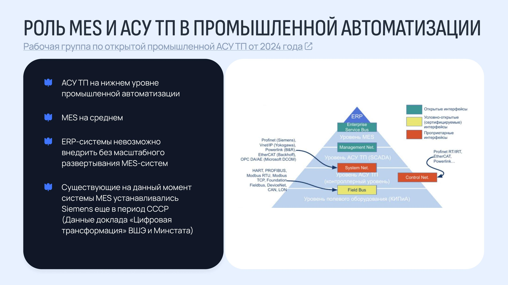

Где промышленная автоматизация в России всё ещё держится на решениях Siemens родом из СССР.

Медиамониторинг законодательства и судебных актов об импортозамещении по отраслям плюс данные Минстата и НИУ ВШЭ (2022) - чтобы понять, где промышленная автоматизация зависит от устаревших MES-систем.
Ключевые сегменты для экспансии - нефтедобыча, газодобыча и энергетика, но с оговоркой: у Газпрома уже есть собственные инициативы в этом направлении, что снижает потенциал входа. Дополнительно перспективны химия, производство транспортных средств, нефтепродуктов и бумаги.
Неочевидные точки роста - логистика и высшее образование: по данным Минстата у них высокие показатели внедрения MES-систем, но они редко фигурируют в типичных обзорах импортозамещения.
Барьер - интеграция с ERP-системами заказчиков из-за вендорной привязанности; данных о промышленности в новых регионах РФ практически нет.
Результаты легли в обоснование расширения продуктовой линейки «Лукоморья» на промышленный сегмент - с рекомендацией строить стратегию продаж с участием службы ИБ и фокусом на отказоустойчивость, ориентируясь на открытую рабочую группу МинПрома по внедрению импортозамещения.